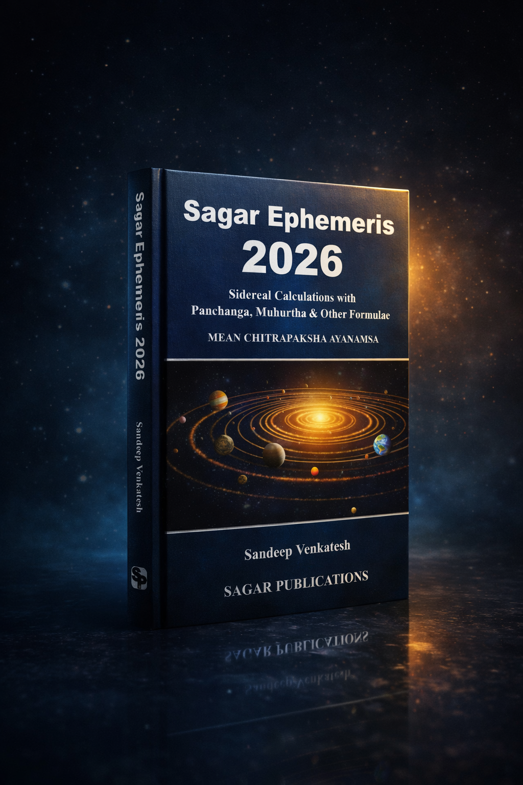

A classical sidereal ephemeris built for serious daily work.
A desk-ready ephemeris + Panchanga almanac for 2026—IST-referenced, place-aware, and built for verification.
Daily tables for practice, Muhurtha timing, and worked calculation manuals for students.
Sagar Ephemeris 2026 is a classical sidereal ephemeris and almanac for serious Jyotisha—authoritative IST-referenced tables (Mean Chitrapaksha) covering nirayana longitudes, Panchanga (tithi, nakshatra, yoga, karana), Rahu–Ketu motion, month boundaries, eclipses, stations/retrogrades, and key sidereal phenomena. It also includes place-dependent ascensional tables for seven major Indian cities, a dedicated Panchanga Muhurtha section, and worked examples (D‑chart computation, Panchanga kalas, and Tajika/Varshaphala methods)—so you can scan fast at the desk and also learn and verify calculations with confidence.

Why it matters
When timing decisions, checking transits, or teaching fundamentals, you need tables that are consistent, place‑aware, and easy to verify—and a reference that also shows the underlying calculation steps when you want to learn or audit the result.
Scan-fast daily reference
Desk‑first daily tables with stable conventions—so Panchanga checks, longitudes, and key events can be scanned quickly without re-learning the format.
Consistent IST system
A single time reference (IST) and a stable ayanamsa (Mean Chitrapaksha) so readings, notes, and classroom examples stay consistent—and day‑boundary markers remain unambiguous.
Beyond tables: phenomena + manuals
Beyond day tables: eclipses, stations, aspects, elongations, combustion, declination phases, occultations—and a calculation manual section with worked examples for deeper learning and verification.
What’s inside
A complete sidereal ephemeris for 2026 with Panchanga, Muhurtha, place‑dependent ascensional tables, and a calculation‑manual companion—built to stay open on your desk.
- Ephemeris (Daily): Daily ephemeris: principal daily tables plus nirayana longitudes (Mercury–Pluto + mean Rahu), with meridian passages and sunrise/sunset—consistently referenced to IST.
- Panchanga (Almanac): Panchanga as an almanac: tithi, nakshatra, yoga, karana endings; lunar/solar month starts; year boundaries; and markers for next/previous civil day.
- Ascensional (Place-dependent): Ascensional work (place‑dependent): universal ascendant/MC tables, lagna start times, and day/segment lengths for 7 Indian cities—built for practical chart work when location matters.
- Muhurtha + Manuals: Phenomena + timing + manuals: eclipse catalogues (with India visibility), stationary points, aspects, elongations, combustion (asta), out‑of‑bounds, occultations—plus calculation manuals and worked examples (varga/D‑chart computation, Panchanga kalas, Tajika/Varshaphala, and supporting reference tables).
Quick snapshot
A yearly working reference designed for daily ephemeris + almanac use, and also step‑by‑step learning and verification.
Who it’s for
Built for two speeds: fast daily scanning (ephemeris + Panchanga) and deeper work when needed—Muhurtha timing, place‑dependent ascensional tables, and calculation manuals with worked examples for learning and verification.
Use it in two modes: scan daily tables in seconds, or open the manuals to learn, audit, and teach.
Practitioners
Use it as your yearly desk ephemeris and almanac: daily longitudes and Panchanga endings, Muhurtha tables, key phenomena, and place‑dependent ascensional tables when location matters.
Teachers & Students
A consistent reference for classes and self‑study—clear conventions plus worked examples and computation manuals (varga/D‑charts, Panchanga kalas, Tajika/Varshaphala) to learn the “how”, not just the result.
Researchers
Integrated catalogues and method notes for reviewing sources, rounding/date handling, and place‑dependence—useful for validation, comparisons, and reproducible checks.
Get Sagar Ephemeris 2026
Choose your preferred ordering method below. This page does not collect emails or track visitors.
Publisher
Sagar Publications
Add official store links / distributor details here for clarity.
Tip: keep purchase options minimal. If you add multiple marketplaces, list them in order of preference and availability.
FAQ
Short answers up front. Details when you open a question.
What ayanamsa is used?
Mean Chitrapaksha Ayanamsa—used consistently across the 2026 tables (as stated on the cover).
Are values referenced to IST?
Yes. Tables are consistently referenced to IST (UTC+05:30), with conventions clearly marked to avoid day-boundary confusion.
Which cities have place-dependent tables?
Seven major Indian cities: Bangalore, Kanyakumari, Kolkata, Mumbai, New Delhi, Srinagar, and Ujjain—covering ascendant/MC work, sunrise–sunset timings, and related tables.
Does it include worked examples and calculation manuals?
Yes. Alongside the ephemeris and Panchanga tables, the book includes worked examples and calculation manuals—covering varga (D‑chart) computation, Panchanga kalas, and traditional Tajika/Varshaphala methods, plus supporting reference tables.
Can I use this as my primary yearly desk reference?
Yes—that’s the intent: an integrated yearly volume for daily ephemeris checks, Panchanga endings, ascensional work, and key phenomena without relying on auxiliary manuals.
Is this paperback or hardcover?
This edition is supplied as a professional print edition. Binding details will be confirmed on the store listing.
How do I use this day-to-day?
Open the daily ephemeris for longitudes and Panchanga endings, consult Muhurtha tables for timing, and use the manuals and worked examples when you want to verify or learn calculations.
Does this website track visitors or collect emails?
This template does not include analytics, cookies, or email capture. If you later add tracking, publish a privacy notice and obtain required consent per your jurisdiction.